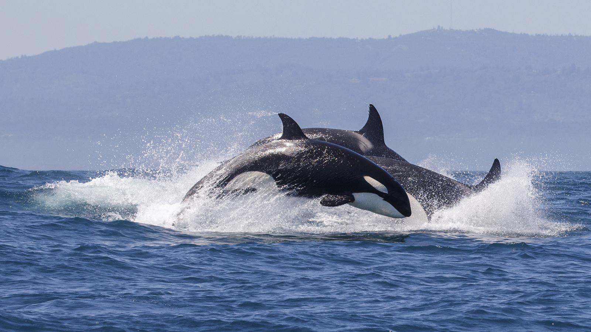

All about Orcas
By:Lillian Alfanek
Learn more about Orcas
About Orcas
What Orcas eat
How Orcas communicate
Orcas names and meanings
More Details about Orcas
n
What threats do Orcas face
Ways to help Orcas

About Orcas
What Orcas eat